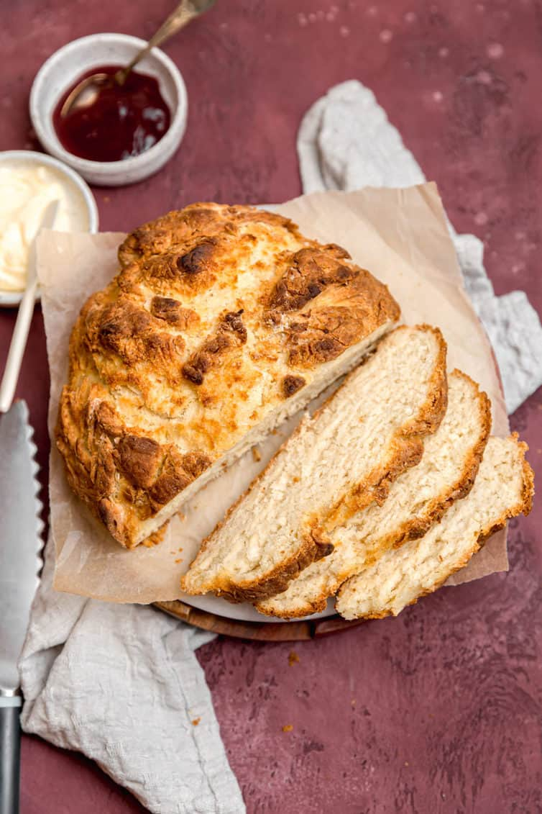

<!DOCTYPE hmtl>
<html lang="en">
</html>

<head>
	<meta charset="utf-8">
	<title>Soda Bread</title>
</head>

<body>
	<h1>Soda Bread</h1>
	
	<br>
	
	<h2>Description</h2>
	<p>
		Well, I guess you are feeling Irish in some capacity and so it's time to bust out the soda bread recipe for the whole gang.  
		Get that corned beef, get that cabbage and put them on the table next to the dish.  This is the undisputed badboy of un-yeasted breads.  
		The king of Celtic loaves.  The arbiter of the median that separates sweet from savory.
	</p>
	<p>
		Fire up the oven and bust out those caraway seeds -- it's time to make the soda bread.  Hoo boy, everyone get up and dance because it's 
		soda bread time.  Who remembers the soda bread dance?  If you don't, it's easy, just check out the Wikihow article about the soda bread 
		dance.  With all that being said, when you're done dancing, try and settle down.  Because after dancing it is time for baking.
	</p> 

	<h2>Ingredients</h2>
	<ul>
		<li>2 1/2 cups (276g) Irish-style flour</li>
		<li>1 1/4 cups (150g) Unbleached bread flour</li>
		<li>3 tablespoons (37g) granulated sugar</li>
		<li>1 teaspoon baking soda</li>
		<li>3/4 teaspoon salt</li>
		<li>2/3 (95g) currants or raisins</li>
		<li>4 tablespoons (57g) cold butter, cut into 8 pieces</li>
		<li>1 1/3 cups (302g) buttermilk</li>
		<li>1 large egg</li>
		<li>2 tablespoons (28g) melted butter</li>
	</ul>

	<h2>Directions</h2>
	<ol>
		<li>Okay preheat that oven to 450 degrees.  You'll want to me using Fahrenheit for this.</li>
		<li>Buy that medium-size mixing bowl you've always talked about and whisk together the flours, sugar, baking soda, salt and dried fruits.</li>
		<li>
			Work that mixture until the butter is evenly distributed and you don't see any big chunks.  Choose your weapon:	
			<ul>
				<li>Mixer</li>
				<li>Blender</li>
				<li>Fork</li>
				<li>Fingers</li>
			</ul>
		</li>
		<li>
			Get another bowl and whisk up the milk and eggs, then pour that business into the dry ingredients.  If it's still a lil too dry and it
			won't squeeze together, toss in	another 1 or 2 tablespoons of buttermilk. 
		</li>
		<li>Knead that dough a few times and then make it into a flattenedish ball.  Now put a cross in that thing with a knife!</li>
		<li>Now you gotta bake this thing for 45-55 minutes.  It should be golden brown and if you put a stick in it, it should come out clean.</li>
		<li>You've been wondering "what's that butter for though?" and, well, now is the time to use it.  Put some on top.</li>
	</ol>
</body>
